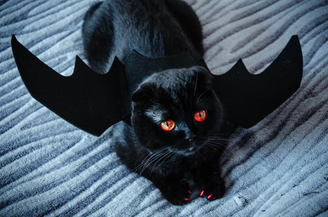

Murder mystery games are generally party games in which one of the partygoers is secretly playing a murderer, and the other attendees must determine who among them is the criminal. In some styles of game, the murderer may be aware that they are the killer and in other games the murderer discovers this along with the other participants. Murder mystery games may involve the actual 'murders' of guests throughout the game, or may open with a 'death' and have the rest of the time devoted to investigation.
Origin The murder mystery fiction genre began in the first half of the nineteenth century. The party game wink murder dates back to at least the early twentieth century, and sees one player secretly selected as a murderer, being able to "kill" other players by winking at them. A killed player must count to five before dying, and the murderer tries to avoid detection. 1935 saw the release of the first murder mystery game known as Jury Box. In this game, the players or jurors are given the scenario of the murder, the evidence presented by the prosecutor and defendant, two photographs of the crime scene and ballot papers. Jurors have to make the decision as to who is guilty and then a real solution is read out. Cluedo, or Clue in North America, was the first murder mystery board game, where players race to identify a killer. It was released some time later in 1948, and has continued to be popular. The earliest mention of role playing murder mystery games in their present "How to Host" boxed format is in the 1980s when they were thought to be a bit of a one-year wonder in the game shops. Back then the scenarios were simple, the acting directions minimal, and the games relied on the guests being comfortable ad-libbing responses to each other's questions. In 1986, Dimitry Davidoff created Mafia, a new version of the murder mystery game that was simpler and most likely the precursor for what we refer to as interactive murder mystery games now. Today, there are many online companies who offer both instant download versions of games and boxed versions.
A costume contest called a masquerade is often held where persons go on stage and compete for nominal prizes based on their skill in assembling and presenting horror-inspired outfits.
A costume party (American English) or a fancy dress party (British English) is a type of party, common mainly in contemporary Western culture, where many of the guests are dressed up in costumes. Costumed Halloween parties are popular in the United States, Canada, Australia, and New Zealand.
